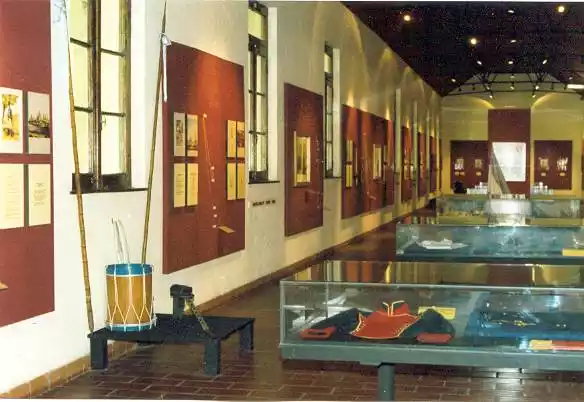
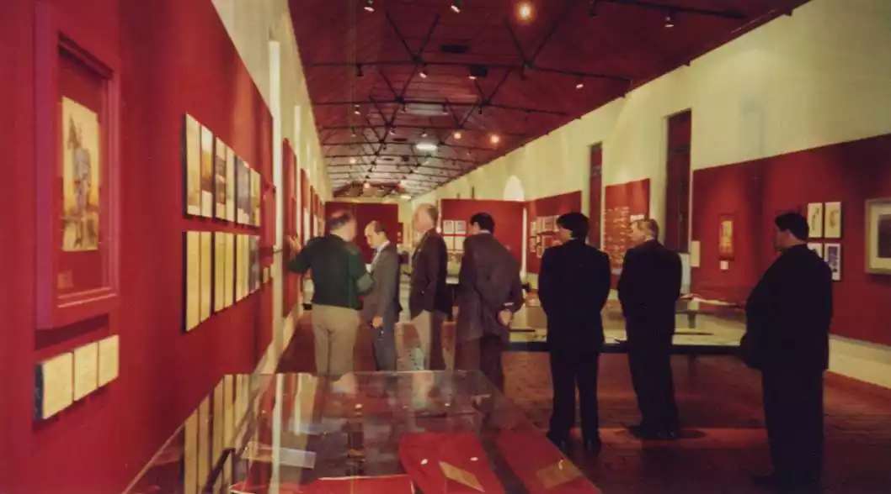

Sala de Libertad
La presente sala propone un recorrido por los momentos fundacionales de nuestra historia nacional, desde
la llegada de los europeos a América hasta los primeros pasos hacia la independencia. A través de
objetos, maquetas, mapas y uniformes, se invita al visitante a conocer cómo se gestó el nacimiento del
Ejército Argentino y su rol en las grandes gestas patrias.
1. Ocupación y Colonización de América
La colonización europea significó un punto de inflexión en la historia del continente americano.
A través de mapas de referencia, se puede observar cómo avanzó el control territorial por parte
de las potencias coloniales. La muestra incluye fabricaciones indígenas que reflejan la
diversidad cultural previa a la conquista, así como ejemplos de vestimenta autóctona, dando
cuenta del encuentro —y conflicto— entre dos mundos: el europeo y el americano.



2. Las Invasiones Inglesas (1806-1807)
Un punto clave en la formación de la conciencia militar del Río de la Plata fueron las Invasiones
Inglesas. La defensa organizada por milicias criollas anticipa lo que más tarde sería el germen del
Ejército Patrio. Se exponen instrumentos musicales utilizados por las bandas militares de la época,
croquis de guerra que muestran los movimientos de tropas, y una maqueta del Convento de Santo Domingo,
escenario fundamental de los combates de 1807.
3. Revolución de Mayo (1810)
Este hito marca el inicio del proceso independentista. La exposición recrea los momentos clave
mediante maquetas y cuadros de la Primera Junta, destacando la figura de Cornelio Saavedra,
comandante del Regimiento de Patricios y presidente de la Junta. Los croquis de guerra permiten
comprender el contexto bélico que acompañó los primeros pasos hacia la emancipación.
4. Armas de la Época
La tecnología militar de inicios del siglo XIX está representada mediante una selección de armas
históricas. Se exhiben pistolas de oficiales, sables de combate, y piezas de artillería como un cañón de
12 libras y un cañón de 14 libras, similares a los utilizados durante las campañas de defensa y en las
primeras acciones revolucionarias.
Infografías
Evolución de la cocina de campaña: Se detalla cómo fueron transformándose los medios para alimentar a
grandes contingentes, desde fogones móviles hasta modernas cocinas montadas en vehículos.
Misiones de paz de la Intendencia Argentina: Se destacan las contribuciones logísticas del Arma de Intendencia en operaciones humanitarias y de mantenimiento de la paz bajo mandato de la ONU, donde el profesionalismo argentino ha sido ampliamente reconocido.
Misiones de paz de la Intendencia Argentina: Se destacan las contribuciones logísticas del Arma de Intendencia en operaciones humanitarias y de mantenimiento de la paz bajo mandato de la ONU, donde el profesionalismo argentino ha sido ampliamente reconocido.
5. Uniformes Militares Históricos
Los uniformes permiten comprender no solo la identidad visual de las fuerzas, sino también sus
condiciones de combate. La muestra presenta uniformes históricos del Ejército Patriota, utilizados por
cuerpos como los Patricios, Húsares y Granaderos. Se incluyen además uniformes de las fuerzas inglesas
que invadieron el Río de la Plata, así como los uniformes de los ejércitos realistas, que representaban
la autoridad del Virreinato del Perú y de la corona española.
Una mirada al nacimiento del Ejército Nacional Esta sala refleja el proceso de transformación del pueblo en armas hacia un ejército nacional. A través de los objetos, documentos y reconstrucciones aquí presentados, se rinde homenaje a los hombres y mujeres que participaron en los momentos más determinantes de nuestra historia, y se reconoce el origen del Ejército Argentino como actor clave en la defensa, organización y construcción de la Nación.
Una mirada al nacimiento del Ejército Nacional Esta sala refleja el proceso de transformación del pueblo en armas hacia un ejército nacional. A través de los objetos, documentos y reconstrucciones aquí presentados, se rinde homenaje a los hombres y mujeres que participaron en los momentos más determinantes de nuestra historia, y se reconoce el origen del Ejército Argentino como actor clave en la defensa, organización y construcción de la Nación.